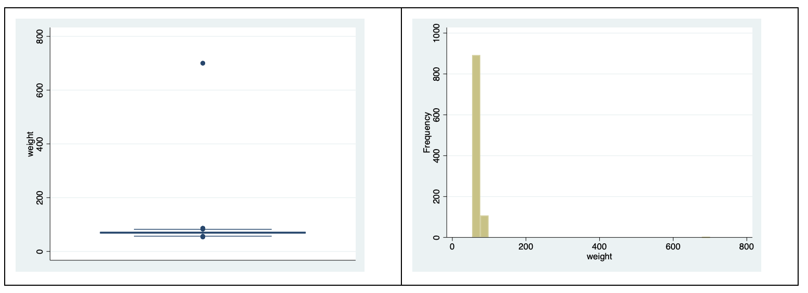
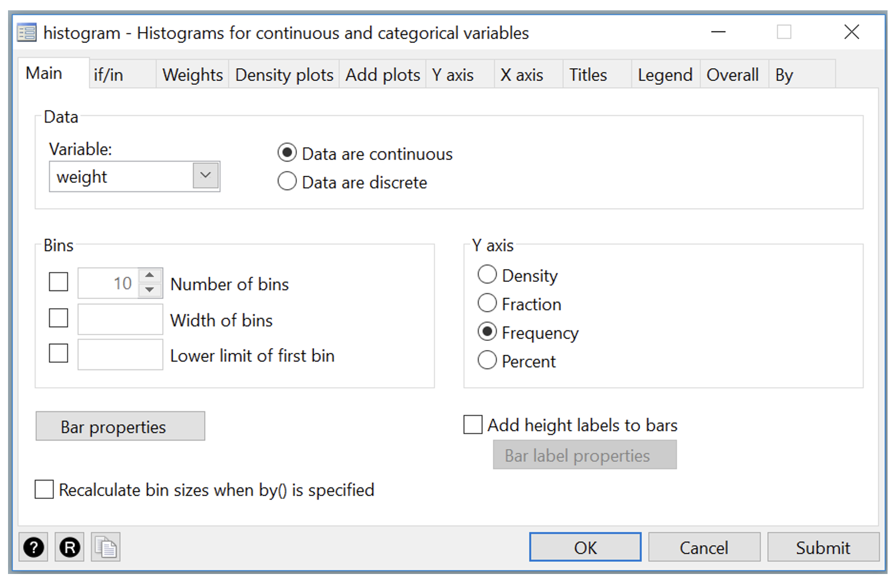
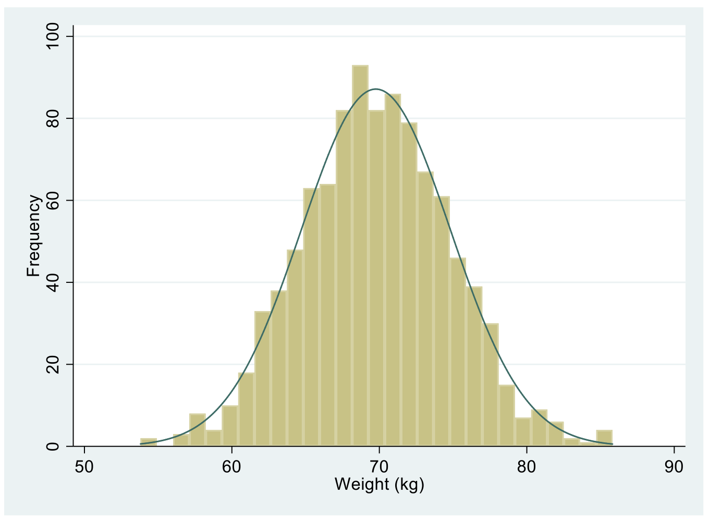
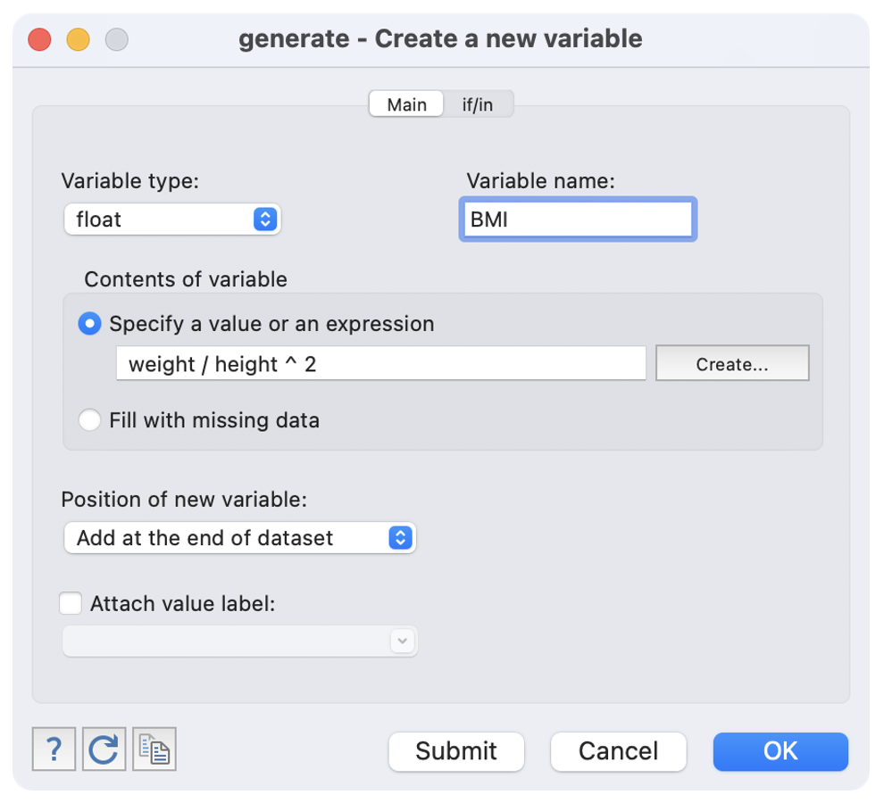
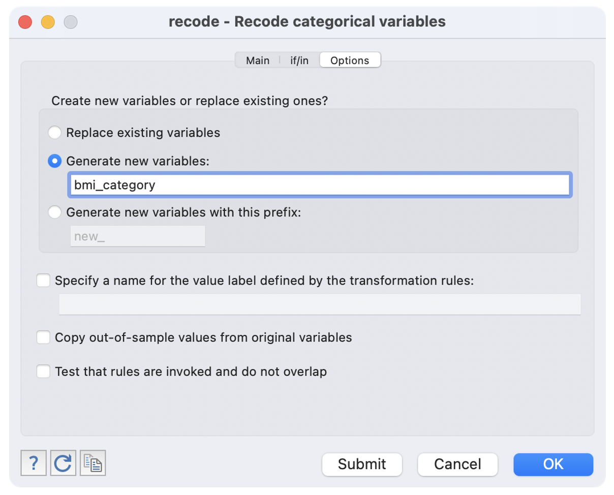
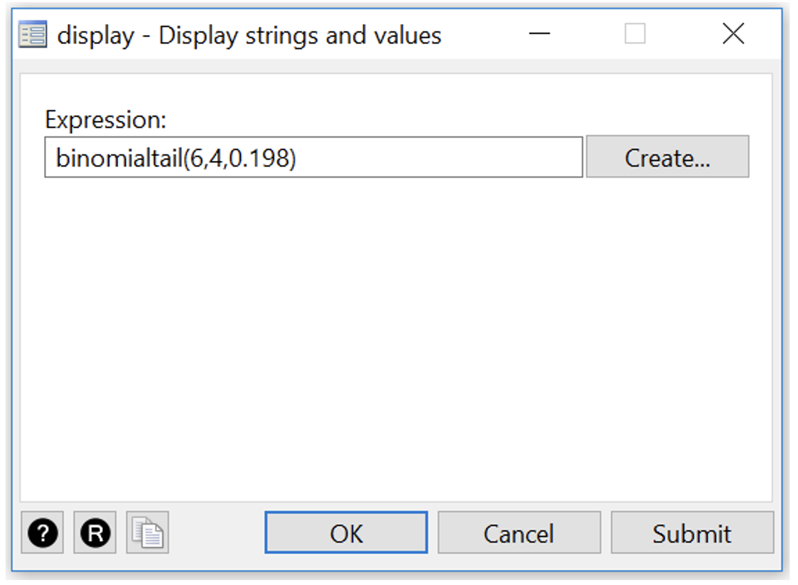
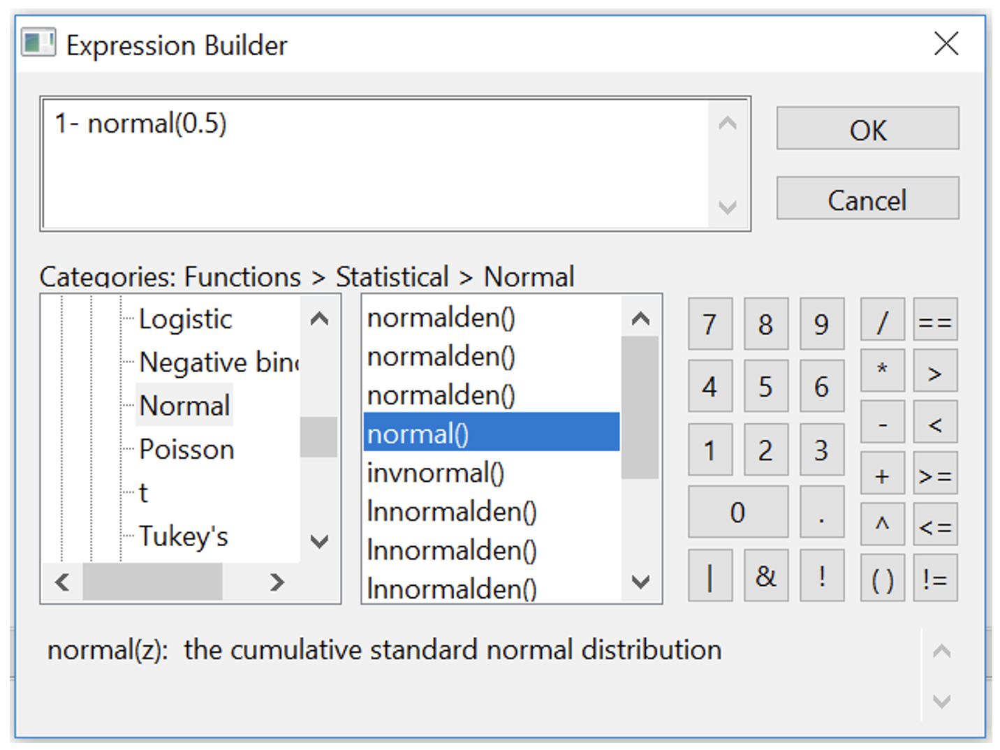

2 Stata notes
2.12 Importing data into Stata
We have described previously how to open data that have been saved as Stata .dta files. It is quite common to have data saved in other file types, such as Microsoft Excel, or plain text files. In this section, we will demonstrate how to import data from other packages into Stata using commands in the File > Import menu.
2.12.1 Importing plain text data into Stata
A csv file, or a “comma separated variables” file is commonly used to store data. These files have a very simple structure: they are plain text files, where data are separated by commas. csv files have the advantage that, as they are plain text files, they can be opened by a large number of programs (such as Notepad in Windows, TextEdit in MacOS, Microsoft Excel - even Microsoft Word). While they can be opened by Microsoft Excel, they can be opened by many other programs: the csv file can be thought of as the lingua-franca of data.
In this demonstration, we will use data on the weight of 1000 people entered in a csv file called weight_s2.csv available on Moodle.
To confirm that the file is readable by any text editor, here are the first ten lines of the file, opened in Notepad on Microsoft Windows, and TextEdit on MacOS.
## Warning in knitr::include_graphics(here::here("img", "mod02", "stata",
## "import-01.png")): It is highly recommended to use relative paths for images.
## You had absolute paths: "/Users/td/Documents/Repos/phcm9795/img/mod02/stata/
## import-01.png"
To import it into Stata, use File > Import > Text data (delimited, .csv, …) to bring up the import delimited text data dialog box. Click the Open button (the folder icon on the right-hand side of the window) and select the csv file you downloaded. The dialog box should look like below:
## Warning in knitr::include_graphics(here::here("img", "mod02", "stata",
## "import-02.png")): It is highly recommended to use relative paths for images.
## You had absolute paths: "/Users/td/Documents/Repos/phcm9795/img/mod02/stata/
## import-02.png"
Here, Stata has (correctly) decided that the first row of the dataset contains the variable names. You may need to change this if the Preview window does not look correct. Click OK or Submit button to import the data.
2.13 Checking your data for errors in Stata
Before you start describing and analysing your data, it is important to make sure that no errors have been made during the data entry process. Basically, you are looking for values that are outside the range of possible or plausible values for that variable.
If an error is found, the best method for correcting the error is to go back to the original data e.g. the hard copy questionnaire, to obtain the original value, entering the correct value into Stata. If the original data is not available or the original data is also incorrect, the erroneous value is often excluded from the dataset.
For continuous variables, the easiest methods are to examine a boxplot and histogram. For example, a boxplot and histogram for the weight variable we just imported appear as:
## Warning in knitr::include_graphics(here::here("img", "mod02", "stata",
## "check-01.png")): It is highly recommended to use relative paths for images.
## You had absolute paths: "/Users/td/Documents/Repos/phcm9795/img/mod02/stata/
## check-01.png"
There is a clear outlying point shown in the boxplot. Although not obvious, the same point is shown in the histogram as a bar around 700 with a very short height.
To identify the outlying observation in the dataset, we can sort your data in ascending order and check the minimum and maximum values in the Data Editor. You will need to decide if these values are a data entry error or are biologically plausible. If an extreme value or “outlier”, is biologically plausible, it should be included in all analyses.
To sort data, you must be in the Data Editor (Edit) window. Select Data > Sort data… and choose weight as shown in the sort dialog box below. Click OK to do an ascending sort (arranging weight from smallest to largest). [Command: sort weight]
## Warning in knitr::include_graphics(here::here("img", "mod02", "stata",
## "check-02.png")): It is highly recommended to use relative paths for images.
## You had absolute paths: "/Users/td/Documents/Repos/phcm9795/img/mod02/stata/
## check-02.png"
By scrolling through the data, you will see that the values range from 53.8kg to 85.8kg with a very high value of 700.2kg. A value as high as 700kg is likely to be a data entry error (e.g. error in entering an extra zero) and is not a plausible weight value. Here, you should check your original data. You might find that the original weight was recorded as 70.2kg. You can change this in Stata by deleting a zero from cell with 700.2 in the Data Editor (Edit) window.
[Command: replace weight = 70.2 in 1000]
Note: if an extreme value lies within the range of biological plausibility it should not be removed from analysis.
Once you have checked your data for errors, you are ready to start analysing your data.
2.14 Overlaying a Normal curve on a Histogram
It can be useful to produce a histogram with an overlayed Normal curve to assess whether our sample appears approximately Normally distributed. First go to menu Graphics > Histogram. In the Histogram dialog box, select weight into the variable box and choose the Frequency radio button for ease of interpretation.
## Warning in knitr::include_graphics(here::here("img", "mod02", "stata",
## "hist-01.png")): It is highly recommended to use relative paths for images.
## You had absolute paths: "/Users/td/Documents/Repos/phcm9795/img/mod02/stata/
## hist-01.png"
You can click the Submit button to check how the plot looks like. To superimpose the normal curve, go to the Density plots and tick Add normal-density plot, then click the Submit or OK button. You can change the X-axis label in the X axis tab, e.g. to Weight (kg).
## Warning in knitr::include_graphics(here::here("img", "mod02", "stata",
## "hist-02.png")): It is highly recommended to use relative paths for images.
## You had absolute paths: "/Users/td/Documents/Repos/phcm9795/img/mod02/stata/
## hist-02.png"[Command: histogram weight, frequency normal xtitle(Weight (kg))]
Your histogram should look like this:
## Warning in knitr::include_graphics(here::here("img", "mod02", "stata",
## "hist-03.png")): It is highly recommended to use relative paths for images.
## You had absolute paths: "/Users/td/Documents/Repos/phcm9795/img/mod02/stata/
## hist-03.png"
2.15 Descriptive statistics for checking normality
All the descriptive statistics including Skewness and Kurtosis discussed in this module can be obtained using the summarize command from Statistics > Summaries, tables, and tests > Summary and descriptive statistics > Summary statistics and specifying detail as an option in Stata (as shown in the Stata Notes for Module 1).
[Command: summarize weight, detail]
## Warning in knitr::include_graphics(here::here("img", "mod02", "stata",
## "desc-01.png")): It is highly recommended to use relative paths for images.
## You had absolute paths: "/Users/td/Documents/Repos/phcm9795/img/mod02/stata/
## desc-01.png"You can similarly repeat this using the dataset Example_1.3.dta used for creating these in the course notes for this module.
2.16 Importing Excel data into Stata
Another common type of file that data are stored in is a Microsoft Excel file (.xls or .xlsx). In this demonstration, we will import a selection of records from a large health survey, stored in the file health-survey.xlsx.
The health survey data contains 1140 records, comprising:
- sex: 1 = respondent identifies as male; 2 = respondent identifies as female
- height: height in meters
- weight: weight in kilograms
To import data from Microsoft Excel, we use File > Import > Excel spreadsheet. First click Browse to locate the file to be imported:
## Warning in knitr::include_graphics(here::here("img", "mod02", "stata", "import-
## excel-01.png")): It is highly recommended to use relative paths for images. You
## had absolute paths: "/Users/td/Documents/Repos/phcm9795/img/mod02/stata/import-
## excel-01.png"Take special note of the Preview at the bottom of the dialog box. Our dataset has the variable names listed in the first row of the spreadsheet, so we tick the Import first row as variable names checkbox. We don’t want to Import all data as strings (strings are character, or text variables), so we leave this unchecked. We finalise the process by clicking OK.
As always, check the Data Browser to confirm that the data were imported successfully.
2.17 Generating new variables
Our health survey data contains information on height and weight. We often summarise body size using BMI: body mass index which is calculated as: \(\frac{\text{weight (kg)}}{(\text{height (m)})^2}\)
To generate a new variable, we use Data > Create or change data > Create new variable.
## Warning in knitr::include_graphics(here::here("img", "mod02", "stata",
## "gen-01.png")): It is highly recommended to use relative paths for images.
## You had absolute paths: "/Users/td/Documents/Repos/phcm9795/img/mod02/stata/
## gen-01.png"
- type the name of the new variable, BMI, in the Variable name box.
- enter the formula to calculate the variable in “Specify a value or an expression”. This can be done in one of two ways:
Option 1: click Create to open the Expression Builder dialog box. This box allows you to build the formula interactively:
## Warning in knitr::include_graphics(here::here("img", "mod02", "stata",
## "gen-02.png")): It is highly recommended to use relative paths for images.
## You had absolute paths: "/Users/td/Documents/Repos/phcm9795/img/mod02/stata/
## gen-02.png"
Clicking Variables in the lower-left-hand pane shows a list of variables in the lower-middle pane of the window. We want to create a new formula of \(\text{weight } \div \text{ height} ^2\). Double-clicking a variable name moves that variable into the formula builder. To build our BMI formula:
- double-click
weight - click the / button (to represent \(\div\)). Note that you can type the / symbol instead of clicking the button
- double-click
height - click the ^ button (to represent “to the power of”) - again you can type the ^ symbol
- enter
2(as ^2 represents “to the power of 2”, or “squared”
Your completed window should look like:
## Warning in knitr::include_graphics(here::here("img", "mod02", "stata",
## "gen-03.png")): It is highly recommended to use relative paths for images.
## You had absolute paths: "/Users/td/Documents/Repos/phcm9795/img/mod02/stata/
## gen-03.png"
Click OK to return to the generate dialog box, which now should appear as:
## Warning in knitr::include_graphics(here::here("img", "mod02", "stata",
## "gen-04.png")): It is highly recommended to use relative paths for images.
## You had absolute paths: "/Users/td/Documents/Repos/phcm9795/img/mod02/stata/
## gen-04.png"
Option 2: if you are entering a simple formula, you can type the formula directly into the expression using your keyboard.
Click OK to generate your new variable.
[Command: generate BMI = weight / height ^ 2]
We should check the construction of the new variable by examining the Data Browser:
## Warning in knitr::include_graphics(here::here("img", "mod02", "stata",
## "gen-05.png")): It is highly recommended to use relative paths for images.
## You had absolute paths: "/Users/td/Documents/Repos/phcm9795/img/mod02/stata/
## gen-05.png"In the general population, BMI ranges between about 15 to 30. It appears that BMI has been correctly generated in this example.
2.18 Summarising data by another variable
We will often want to calculate the same summary statistics by another variable. For example, we might want to calculate summary statistics for BMI for males and females separately. We can do this in Stata by defining sex as a by-variable. Many Stata commands (and dialog boxes) allow for a by-variable. For example, to obtain summary statistics for BMI by sex (note that sex has been given a value label, as described in Module 1):
- Define
BMIas our Variable in the Statistics > Summaries, tables, and tests > Summary and descriptive statistics > Summary statistics dialog box.
## Warning in knitr::include_graphics(here::here("img", "mod02", "stata", "summ-
## by-01.png")): It is highly recommended to use relative paths for images. You
## had absolute paths: "/Users/td/Documents/Repos/phcm9795/img/mod02/stata/summ-
## by-01.png"
- Click the by/if/in tab, tick Repeat command by groups, and select the variable you want to be the by-variable. In this case, we choose
sexand then click OK.
## Warning in knitr::include_graphics(here::here("img", "mod02", "stata", "summ-
## by-02.png")): It is highly recommended to use relative paths for images. You
## had absolute paths: "/Users/td/Documents/Repos/phcm9795/img/mod02/stata/summ-
## by-02.png"[Command: by sex, sort : summarize BMI]
The by-variable will tell Stata to repeat the summarize command for each distinct value of sex. Hence, your by-variable must be a discrete variable with only a relatively small number of categories.
The following results appear:
. by sex, sort : summarize BMI
-----------------------------------------------------------------------------------
-> sex = Male
Variable | Obs Mean Std. Dev. Min Max
-------------+---------------------------------------------------------
BMI | 513 28.29561 5.204975 16.47519 57.23643
-----------------------------------------------------------------------------------
-> sex = Female
Variable | Obs Mean Std. Dev. Min Max
-------------+---------------------------------------------------------
BMI | 627 27.81434 6.380523 9.209298 52.59515Here, we have calculated summary statistics separately for Males and Females. A form of the by tab appears in many Stata windows. For example, we can create separate histograms for males and females using the same two-step process:
- Define
BMIas the variable to be plotted
## Warning in knitr::include_graphics(here::here("img", "mod02", "stata", "hist-
## by-01.png")): It is highly recommended to use relative paths for images. You
## had absolute paths: "/Users/td/Documents/Repos/phcm9795/img/mod02/stata/hist-
## by-01.png"- Define
sexas a by-variable by completing the By tab:
## Warning in knitr::include_graphics(here::here("img", "mod02", "stata", "hist-
## by-02.png")): It is highly recommended to use relative paths for images. You
## had absolute paths: "/Users/td/Documents/Repos/phcm9795/img/mod02/stata/hist-
## by-02.png"
This produces the following graph:
## Warning in knitr::include_graphics(here::here("img", "mod02", "stata", "hist-
## by-03.png")): It is highly recommended to use relative paths for images. You
## had absolute paths: "/Users/td/Documents/Repos/phcm9795/img/mod02/stata/hist-
## by-03.png"
2.19 Recoding data
One task that is common in statistical computing is to recode variables. For example, we might want to group some categories of a categorical variable, or to present a continuous variable in a categorical way.
In this example, we can recode BMI into the following categories as suggested by the World Health Organisation [footnote]:
- Underweight: BMI < 18.5
- Normal weight: 18.5 \(\le\) BMI < 25
- Pre-obesity: 25 \(\le\) BMI < 30
- Obesity Class I: 30 \(\le\) BMI < 35
- Obesity Class II: 35 \(\le\) BMI < 40
- Obesity Class III: BMI \(\ge\) 40
To recode data in Stata, we use the Recode categorical variable command. It may seem odd to use a command called Recode categorical variable to recode BMI, a continuous variable, but that is just the name Stata uses for its recode command.
- Click Data > Create or change data > Other variable-transformation commands > Recode categorical variable to open the recode dialog box.
- Choose
BMIas the variable to be recoded from. - Enter the recoding rules. To recode from a range of values to a new category while assigning a value label, we enter the recoding rule in the following form:
(a / b = c “label”) where:
- a is the lower limit of the range to be recoded from
- b is the upper limit of the range to be recoded from
- c is the value of the new category to be recoded to
- label is the label to assign to the category c
It is important to note that the values of a and b are inclusive; and we can use the words min and max to represent the smallest and largest values respectively.
So to recode the underweight category, we would enter: (min / 18.4999 = 1 "Underweight")
Similarly, for the normal weight category, we would enter: (18.5 / 24.9999 = 2 "Normal weight")
Your completed recode dialog box should look as follows:
## Warning in knitr::include_graphics(here::here("img", "mod02", "stata",
## "recode-01.png")): It is highly recommended to use relative paths for images.
## You had absolute paths: "/Users/td/Documents/Repos/phcm9795/img/mod02/stata/
## recode-01.png"
- Do not forget this step! To recode into a new variable, we must click the options tab to give the name of the new variable. If this step is not performed, Stata will overwrite the initial variable with the recoded version. Here, we tell Stata to generate a new variable called bmi_category:
## Warning in knitr::include_graphics(here::here("img", "mod02", "stata",
## "recode-02.png")): It is highly recommended to use relative paths for images.
## You had absolute paths: "/Users/td/Documents/Repos/phcm9795/img/mod02/stata/
## recode-02.png"
Click OK to complete the recoding.
Note that the default label for the new recoded variable bmi_category is RECODE of BMI. This can be relabelled in the usual way: click on bmi_category in the Variables window, then enter a name such as BMI Category in the Label box in the Properties window.
2.20 Computing binomial probabilities using the Hand calculator in Stata
There are three Stata functions that we can use to calculate probabilities based on the binomial distribution: binomialp, binomial and binomialtail. Stata provides a description of the function in the Expression Builder, summarised below.
| Function | Description | Example |
|---|---|---|
| binomialp(n,k,p) | The probability of observing k successes in n trials when the probability of a success on one trial is p | Probability of observing 3 smokers from 6 people |
| binomial(n,k,p) | The probability of observing k or fewer successes in n trials when the probability of a success on one trial is p | Probability of observing 2 or fewer smokers from 6 people |
| binomialtail(n,k,p) | The probability of observing k or more successes in n trials when the probability of a success on one trial is p | Probability of observing 4 or more smokers from 6 people |
To do the computation for part (a) in Worked Example 2.1, go to Data > Other utilities > Hand calculator from the main menu in Stata.
## Warning in knitr::include_graphics(here::here("img", "mod02", "stata",
## "binomial-01.png")): It is highly recommended to use relative paths for images.
## You had absolute paths: "/Users/td/Documents/Repos/phcm9795/img/mod02/stata/
## binomial-01.png"In the dialog box, click Create… to bring up the Expression Builder dialog box. In the Categories box, click on Functions to expand the list, then scroll down to Statistical, expand the list again and select Binomial.
## Warning in knitr::include_graphics(here::here("img", "mod02", "stata",
## "binomial-02.png")): It is highly recommended to use relative paths for images.
## You had absolute paths: "/Users/td/Documents/Repos/phcm9795/img/mod02/stata/
## binomial-02.png"
A list of functions will pop up to the right of the Categories box. Double click on binomialp() which will populate the top of the expression builder box with binomialp(n,k,p). Following the instructions at the bottom of the box:
- k is the number of successes, here, the number of smokers (i.e. k=3);
- n is the number of trials (i.e. n=6);
- and p is probability of drawing a smoker from the population, which is 19.8% (i.e. p=0.198).
Replace each of these with the appropriate number into the box as shown below.
## Warning in knitr::include_graphics(here::here("img", "mod02", "stata",
## "binomial-03.png")): It is highly recommended to use relative paths for images.
## You had absolute paths: "/Users/td/Documents/Repos/phcm9795/img/mod02/stata/
## binomial-03.png"
Click the OK button in the Expression Builder box, then click OK or Submit in the main dialog box. The probability is now displayed on your Results screen as .08008454 which rounds off to 0.08 as shown in part (a) of Worked Example 2.1. (Note that Stata doesn’t print the 0 in front of the decimal point in the output.)
[Command: display binomialp(6, 3, 0.198)]
To calculate the upper tail of probability in part (b), go to Data > Other utilities > Hand calculator from the main menu and bring up the Expression Builder box again. You may need to clear the text in your Expression box from your previous display command.
In the Categories box, navigate to Binomial and select it as you had before. Now double click on binomialtail() which will populate the top of the expression builder box with binomialtail(n,k,p). To obtain P(X \(\ge\) 4) from 6 trials, n=6, k=4 and p=0.198. When you are done, click the OK button in the Expression Builder box to get the below in the display dialog box:
## Warning in knitr::include_graphics(here::here("img", "mod02", "stata",
## "binomial-04.png")): It is highly recommended to use relative paths for images.
## You had absolute paths: "/Users/td/Documents/Repos/phcm9795/img/mod02/stata/
## binomial-04.png"
Click OK or Submit when you are done. [Command: display binomialtail(6, 4, 0.198)]
For the lower tail for part (c), choose or double-click on binomial() from the list of functions. To obtain P(X \(\le\) 2) from 6 trials, enter n=6, k=2 and p=0.198.
## Warning in knitr::include_graphics(here::here("img", "mod02", "stata",
## "binomial-05.png")): It is highly recommended to use relative paths for images.
## You had absolute paths: "/Users/td/Documents/Repos/phcm9795/img/mod02/stata/
## binomial-05.png"
Click OK or Submit when you are done. [Command: display binomial(6, 2, 0.198)]
2.21 Computing probabilities from the normal distribution using the Hand calculator in Stata
From Stata, the probability using a normal distribution can be obtained from the display command via Data > Other utilities > Hand calculator as shown in Worked example 2.1. In the dialog box, click the Create… button to bring up the Expression Builder dialog box. In the Categories box, click on Functions to expand the list, then scroll down to Statistical and expand the list again and select Normal this time. Double-click on normal() to populate the top of the expression builder box with normal(z).
The instructions at the bottom of the box explain that this is the cumulative standard normal distribution which means it gives P(Z<z) in Stata. In other words, the normal() function gives you the lower tail probability from the standard normal distribution. To obtain P(Z>0.5), edit the box to 1-normal(0.5) as shown below.
## Warning in knitr::include_graphics(here::here("img", "mod02", "stata",
## "normal-01.png")): It is highly recommended to use relative paths for images.
## You had absolute paths: "/Users/td/Documents/Repos/phcm9795/img/mod02/stata/
## normal-01.png"
Click OK, then Submit to obtain the same value as from the table. [Command: display 1-normal(0.5)]